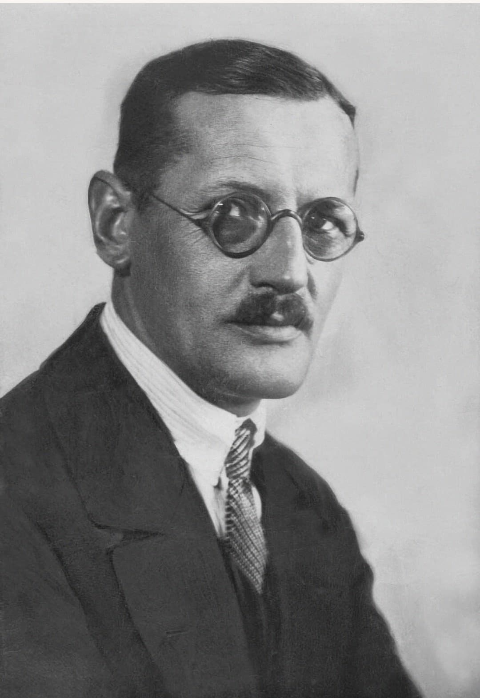
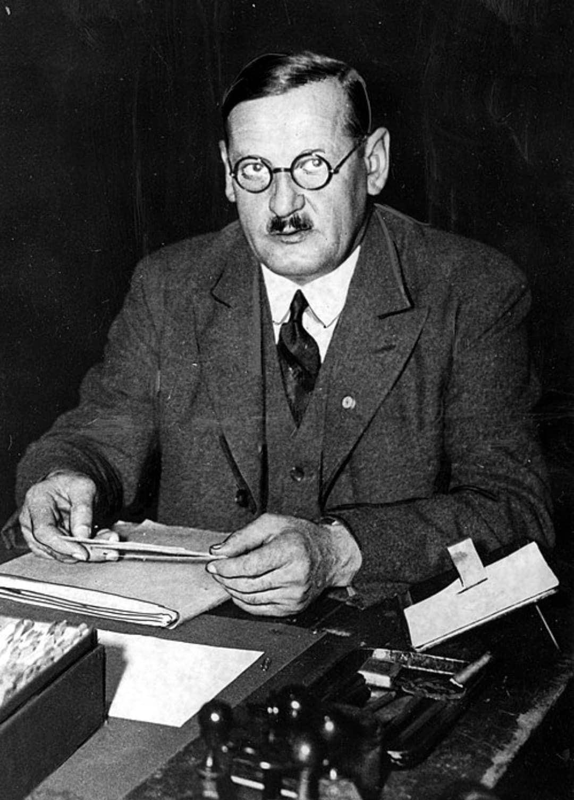
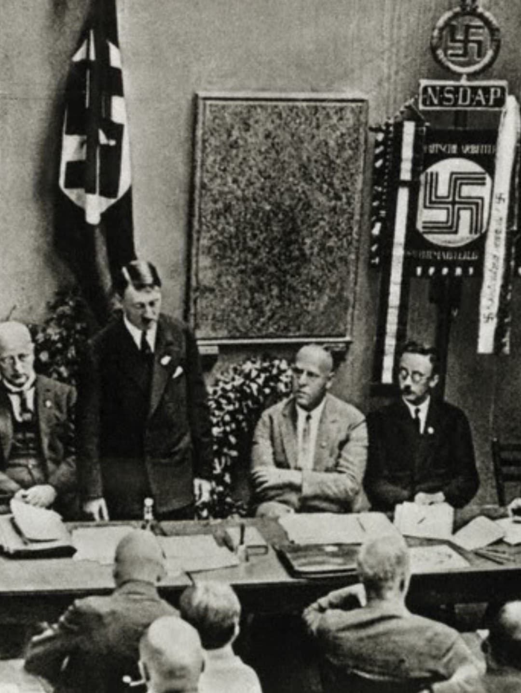

Anton Drexler (1884–1942) est l’un des hommes les plus importants de la genèse du nazisme, mais aussi l’un des plus oubliés. Ouvrier métallurgiste, militant nationaliste, il fonde en 1919 le Deutsche Arbeiterpartei (DAP), le Parti ouvrier allemand, qui deviendra bientôt le NSDAP. C’est lui qui repère Adolf Hitler lors d’une réunion et l’invite à rejoindre le parti. Sans Drexler, Hitler n’aurait probablement jamais eu de structure politique pour développer son mouvement.

Le visage d’Anton Drexler est celui d’un ouvrier allemand du début du XXe siècle : traits simples, visage rond, moustache courte, cheveux plaqués, regard sérieux. Sur les photos des années 1919–1921, il apparaît en costume sombre, cravate simple, posture rigide. Il n’a pas le charisme d’un orateur de masse : Drexler est un organisateur, pas un tribun.
En 1919, dans une Allemagne vaincue, humiliée par le traité de Versailles, Drexler fonde le Deutsche Arbeiterpartei (DAP). Ce petit parti nationaliste, antisémite et anti‑marxiste rassemble des ouvriers et des petits employés hostiles à la République de Weimar. Le DAP est encore insignifiant, mais il offre un cadre à la colère politique de l’après‑guerre.

En septembre 1919, Adolf Hitler assiste à une réunion du DAP comme observateur. Lorsqu’il prend la parole pour répondre à un intervenant, Drexler est impressionné par sa capacité à parler, à attaquer, à galvaniser. Il lui dit : « Vous devez rejoindre notre parti. » Hitler accepte. Quelques mois plus tard, il commence à prendre le contrôle du DAP.
Drexler est donc l’homme qui introduit Hitler en politique. Ce geste aura des conséquences historiques majeures.
En 1920, Drexler et Hitler transforment le DAP en NSDAP (Nationalsozialistische Deutsche Arbeiterpartei), le Parti national‑socialiste des travailleurs allemands. Drexler est officiellement cofondateur du NSDAP. Il participe à la rédaction du programme du parti, mais très vite, Hitler impose son style, son discours, son culte de la personnalité.

Dès 1921, Hitler prend le contrôle total du parti. Drexler est relégué à un rôle honorifique, sans pouvoir réel. Il devient président « symbolique » du NSDAP, mais n’a plus aucune influence. Après l’échec du putsch de la Brasserie en 1923, Drexler quitte définitivement le parti.
Hitler ne veut aucun rival, même historique. Le régime nazi fera tout pour effacer Drexler de l’histoire officielle du parti.
Après son départ, Drexler rejoint un petit parti nationaliste sans importance, le Völkischer Block, puis retourne à une vie ordinaire : ouvrier, employé, petit militant local. Il ne joue plus aucun rôle dans la politique allemande. Il meurt en 1942 à Munich, totalement ignoré par le régime nazi.
Ironie de l’histoire : l’homme qui a recruté Hitler et cofondé le NSDAP meurt dans l’ombre, effacé par celui qu’il a lancé.
Les photos d’Anton Drexler sont rares. On le voit sur quelques portraits officiels, des photos de réunions du DAP, des documents signés de sa main. Le régime nazi n’a jamais mis en avant son image, préférant construire un récit où Hitler apparaît comme le seul fondateur du mouvement.
Étudier Drexler, c’est remonter aux origines du nazisme et comprendre que ce mouvement n’est pas né d’un seul homme, mais d’un milieu, d’un réseau, d’une série de décisions et de rencontres.
Anton Drexler fut le fondateur du DAP, le parti qui deviendra le NSDAP. C’est lui qui recrute Hitler en 1919 et l’introduit en politique. Rapidement évincé, il quitte le parti en 1923, rejoint un petit mouvement nationaliste sans importance et meurt en 1942, ignoré par le régime nazi. Son rôle fondateur est volontairement effacé par la propagande, mais il reste un personnage essentiel pour comprendre la naissance du nazisme.